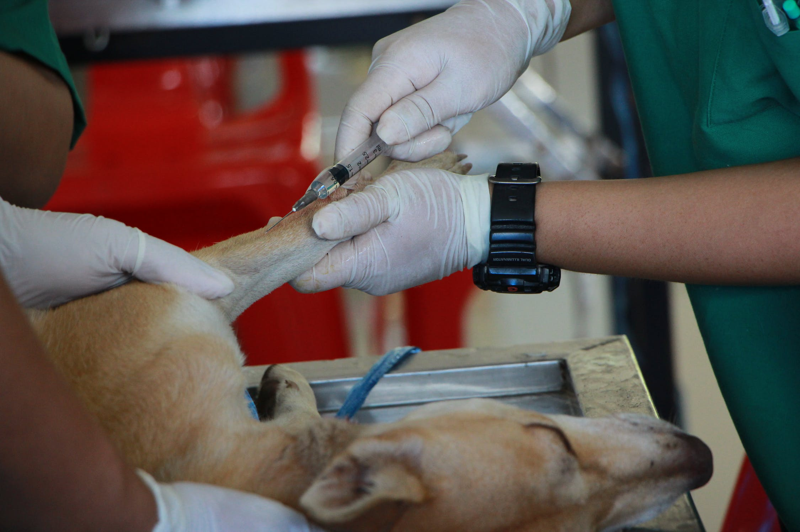

<link rel=stylesheet href="style.css">
<header id="header">
    <div class="title-and-img">
      
      <h1>The Pet Mart Vet Services</h1>
    </div>
    
  </header>
  <main id="main">
  
  
    <section id="services">
      <div class="bath">
        <div>
          <h3>Medical Services</h3>
          <p>We offer state-of-the-art equipment and technology.</p>
          
        </div>
      </div>
      
      <div class="trim">
        <div>
          <h3>Surgical Services</h3>
          <p>
  Full range of surgical procedures including orthopedics and emergency surgeries.</p>
  
        
        </div>
      </div>
      
      <div class="nails">
        <div>
          <h3>Dental Care</h3>
          <p>A dental exam can determine whether your dog needs preventive dental care such as scaling and polishing.</p>
          
        
          <div class="nails">
        <div>
          <h3>House Calls</h3>
          <p>The elderly, physically challenged, and multiple dog households often find our in-home veterinary service helpful and convenient.</p>
          
        
          <div class="nails">
        <div>
          <h3>Emergencies</h3>
          <p>At least one of our doctors is on call every day and night.</p>
          
        
        </div>
      </div>
    </section>
    
    
  
    